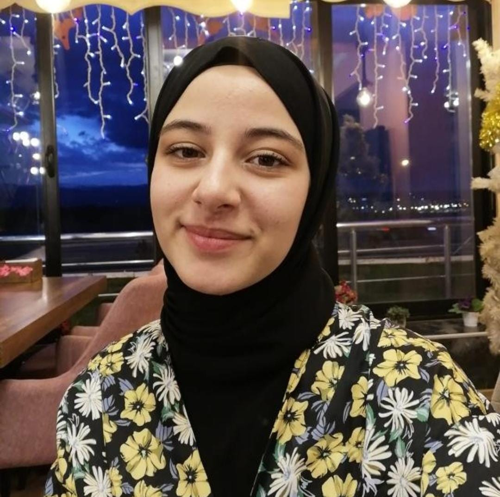
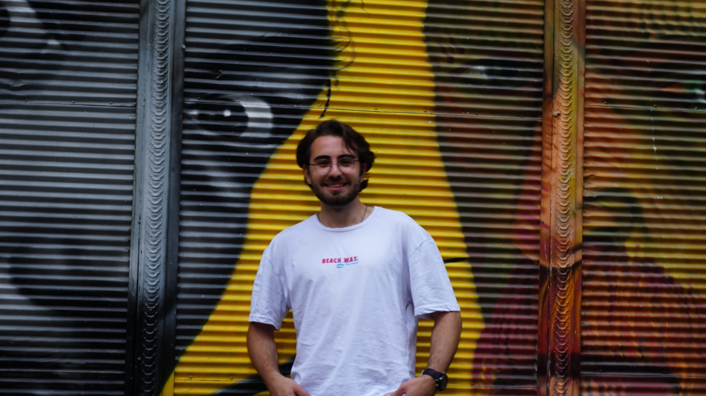
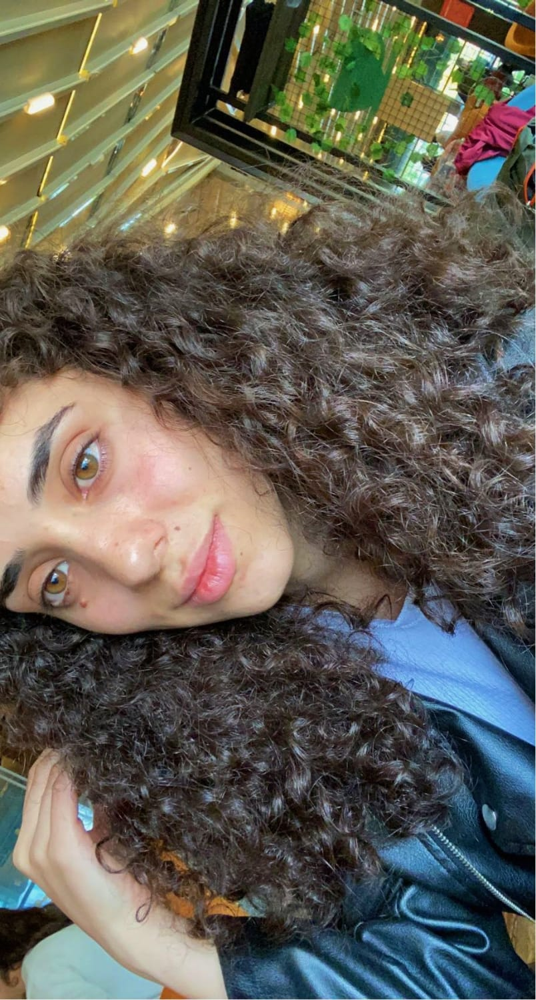

Eyyüp Fethi Müjdeci Projeler GitHub1 GitHub2 GitHub3 Miraç Sancı Projeler GitHub1 GitHub2 GitHub3 Özgenur Kaplan Projeler GitHub1 GitHub2 GitHub3  Elif Beyza Köftegül Projeler GitHub1 GitHub2 GitHub3  Hakan Tercanlı Projeler GitHub1 GitHub2 GitHub3 Umut Topalak Projeler GitHub1 GitHub2 GitHub3 Ömer Gündüz Projeler GitHub1 GitHub2 GitHub3 Nurullah Işık Projeler GitHub1 GitHub2 GitHub3 Şeymanur Akbaş Projeler GitHub1 GitHub2 GitHub3 Zeynep Çevik Projeler GitHub1 GitHub2 GitHub3 Melik Karaca Projeler GitHub1 GitHub2 GitHub3 Ekmel Kurt Projeler GitHub1 GitHub2 GitHub3  Gamze Aktaş Projeler GitHub1 GitHub2 GitHub3 Erdem Dayan Projeler GitHub1 GitHub2 GitHub3 Ceylan Sarıkaya Projeler GitHub1 GitHub2 GitHub3